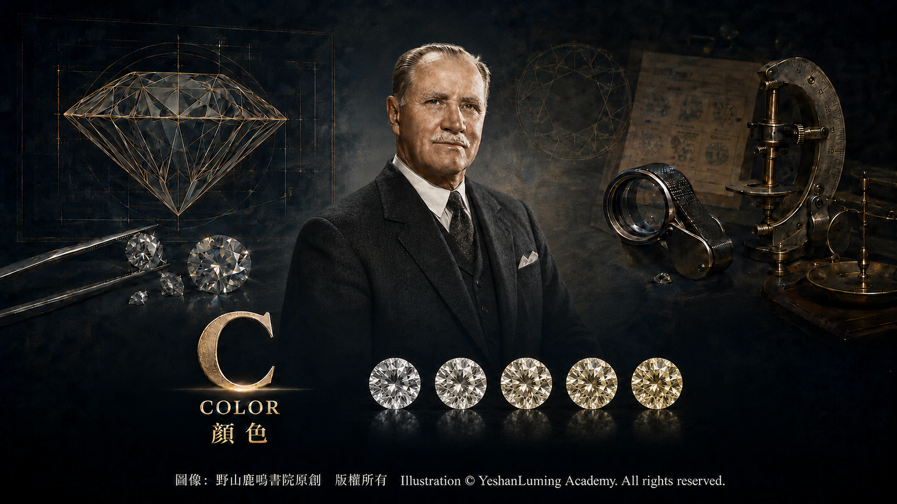
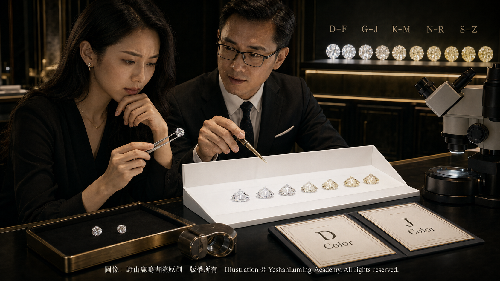

顏色的細節·D到Z之間究竟差在哪裡The Nuances of Color: What Exactly Is the Difference Between D and Z?
The World of Gemstones · Diamond SeriesThe Nuances of Color: What Exactly Is the Difference Between D and Z?
The World of Gemstones · Diamond Series顏色的細節·D到Z之間究竟差在哪裡
寶石世界·鑽石篇
寶石世界·鑽石篇（116）The World of Gemstones · Diamond Series (116)
在前面的文章中，我們已經知道，對於D至Z範圍的鑽石而言，通常是顏色越少，等級越高。但當我們進一步細看時，就會發現一個更微妙的問題：D到Z之間的差異，究竟在哪裡？為什麼有時肉眼幾乎看不出來的差別，卻能帶來明顯的價格變化？
這個問題的答案，需要從更加精細的觀察方法說起。
從寶石學的角度看，鑽石的顏色分級並不是在隨意的環境中進行的，而是在嚴格控制的條件下完成的。評級需要使用規定的光源、背景和觀察方式，以盡量排除外界環境造成的干擾，使不同時間和不同地點得到的評級結果具有更高的一致性。
按照GIA的標準，鑽石的顏色分級是通過與一系列具有已知顏色等級的標準比色石進行比較來完成的。評級人員通常會將鑽石臺面向下放置，主要觀察亭部所呈現的體色，以盡量減少切工、明亮度與色散對顏色判斷的干擾，從而更準確地確定其顏色範圍。
這種方法與我們日常佩戴時從正面觀察鑽石的方式不同。也正因如此，許多顏色差異在日常情況下並不明顯，但在專業分級條件下，卻可以通過與標準比色石的反覆比較被區分出來。
在GIA的分類體系中，D、E、F屬於「無色」範圍；G、H、I、J屬於「接近無色」；K、L、M屬於「微色」；N至R屬於「很淺的顏色」；S至Z則屬於「淺色」範圍。隨著等級逐漸向Z移動，黃色、褐色或灰色的體色通常會變得更加明顯。
D級位於GIA顏色分級的最高端，在標準分級條件下呈現最高程度的無色外觀。E級與F級同樣屬於無色範圍，三者之間的細微差異，通常需要由受過訓練的評級人員在標準條件下，借助比色石進行判斷。進入G與H級之後，某些鑽石可能隱約呈現一點暖色調，但在許多日常佩戴環境中，依然會顯得潔白明亮。
在前面的文章中，我們已經知道，對於D至Z範圍的鑽石而言，通常是顏色越少，等級越高。但當我們進一步細看時，就會發現一個更微妙的問題：D到Z之間的差異，究竟在哪裡？為什麼有時肉眼幾乎看不出來的差別，卻能帶來明顯的價格變化？
這個問題的答案，需要從更加精細的觀察方法說起。
從寶石學的角度看，鑽石的顏色分級並不是在隨意的環境中進行的，而是在嚴格控制的條件下完成的。評級需要使用規定的光源、背景和觀察方式，以盡量排除外界環境造成的干擾，使不同時間和不同地點得到的評級結果具有更高的一致性。
按照GIA的標準，鑽石的顏色分級是通過與一系列具有已知顏色等級的標準比色石進行比較來完成的。評級人員通常會將鑽石臺面向下放置，主要觀察亭部所呈現的體色，以盡量減少切工、明亮度與色散對顏色判斷的干擾，從而更準確地確定其顏色範圍。
這種方法與我們日常佩戴時從正面觀察鑽石的方式不同。也正因如此，許多顏色差異在日常情況下並不明顯，但在專業分級條件下，卻可以通過與標準比色石的反覆比較被區分出來。
在GIA的分類體系中，D、E、F屬於「無色」範圍；G、H、I、J屬於「接近無色」；K、L、M屬於「微色」；N至R屬於「很淺的顏色」；S至Z則屬於「淺色」範圍。隨著等級逐漸向Z移動，黃色、褐色或灰色的體色通常會變得更加明顯。
D級位於GIA顏色分級的最高端，在標準分級條件下呈現最高程度的無色外觀。E級與F級同樣屬於無色範圍，三者之間的細微差異，通常需要由受過訓練的評級人員在標準條件下，借助比色石進行判斷。進入G與H級之後，某些鑽石可能隱約呈現一點暖色調，但在許多日常佩戴環境中，依然會顯得潔白明亮。
值得注意的是，GIA的顏色等級從D開始，而不是從A開始。在這套標準建立以前，市場上曾經存在A、B、C、AA、AAA以及數字等多種缺乏統一標準的稱呼。GIA在1953年建立新的顏色分級體系時，特意從D開始，以避免與過去混亂的名稱相互混淆。
從寶石學的角度看，這些顏色差異來自鑽石晶體中的微量元素、晶格缺陷和結構變化。對許多呈黃色調的天然鑽石而言，晶體中的氮及與氮有關的晶格缺陷，會對可見光產生選擇性吸收，使鑽石呈現不同程度的黃色。
然而，D–Z範圍也包括帶有褐色或灰色調的鑽石，其顏色還可能與晶格缺陷、塑性變形及其他結構因素有關。因此，從D到Z的顏色變化，不能簡單理解為氮含量依次增加，而是多種原子層面因素共同作用的結果。
這種顏色變化是連續的，而不是突然發生的。也就是說，從D到Z是一個逐步過渡的過程，而不是自然界中原本就存在一道道清晰可見的分界線。
這也解釋了為什麼在某些相鄰等級之間，例如D與E，或者G與H，人眼很難在普通環境下直接分辨差異。但在克拉重量、淨度、切工及其他條件大致相同的情況下，這些等級在市場中仍可能形成明顯的價格差異。
這種價格差異，一方面來自不同顏色等級的相對稀有性，另一方面也來自標準本身所建立的市場信任與比較體系。
按照GIA建立分級體系的理念，分級的目的不只是區分品質，也是為鑽石市場提供一種共同語言。即使差異十分微小，只要具有統一而穩定的標準，鑽石就能被更加客觀地描述、比較和交易。

Click to enlarge
從天然形成的角度看，能夠呈現D級無色外觀的鑽石相對稀少。這可能與較少的致色雜質、特定的氮聚集狀態，以及晶格中缺少足以產生明顯體色的缺陷等多種因素有關。D級代表的是標準條件下觀察到的顏色外觀，而不是對鑽石化學純度的直接判定。
然而，在實際選購中，是否一定要追求最高顏色等級，則取決於個人需求與使用情境。在許多常見的大小、琢形和鑲嵌條件下，G或H級鑽石正面觀察時已能呈現潔白明亮的外觀，並可能具有更好的價格平衡。
不過，鑽石顏色的視覺效果也會受到克拉重量、琢形、切工、鑲嵌金屬顏色、周圍配鑽以及觀察方向的影響。每個人對暖色調的敏感程度也不完全相同。因此，最合適的顏色等級，仍需要結合具體鑽石與個人偏好作出判斷。
總而言之，鑽石顏色等級雖然重要，但並不是決定鑽石品質、外觀與價格的唯一因素。
在鑽石的世界裡，顏色既是一個科學問題，也是一個選擇問題。它既可以在標準條件下被細緻而一致地評定，也可以在實際選購中根據個人偏好進行取捨。
也許可以這樣理解：D到Z之間的差異，不只是顏色深淺的變化，也是一條從近乎無色到逐漸顯現自然色調的過渡。
而每一個位置，都有其自身的特點，也有其存在的意義。
（未完待續）
In the preceding articles, we learned that, for diamonds within the D-to-Z range, the less color they possess, the higher their grade generally is. But when we look more closely, a subtler question emerges: What exactly are the differences between D and Z? Why can distinctions that are almost invisible to the naked eye sometimes produce noticeable differences in price?
The answer begins with the more exacting methods used to observe diamond color.
From a gemological perspective, diamond color grading is not performed in an arbitrary environment, but under strictly controlled conditions. Grading requires prescribed lighting, background, and viewing methods in order to minimize interference from the surrounding environment and achieve greater consistency among results obtained at different times and in different locations.
Under GIA standards, a diamond’s color grade is determined by comparing it with a series of master stones whose color grades are already known. Graders normally place the diamond table-down and concentrate on the bodycolor visible through the pavilion, thereby minimizing the influence of cut, brightness, and dispersion upon color perception and determining its color range more accurately.
This method differs from the way we normally view a diamond face-up when it is being worn. For precisely this reason, many color differences that are not apparent under everyday conditions can nevertheless be distinguished under professional grading conditions through repeated comparison with master stones.
In the GIA classification system, D, E, and F belong to the “Colorless” range; G, H, I, and J are classified as “Near Colorless”; K, L, and M as “Faint”; N through R as “Very Light”; and S through Z as “Light.” As the grade moves progressively toward Z, yellow, brown, or gray bodycolor generally becomes more noticeable.
D lies at the highest end of the GIA color-grading scale and exhibits the greatest degree of colorlessness under standard grading conditions. E and F also belong to the Colorless range, and the subtle distinctions among these three grades usually require trained graders working under standard conditions and using master stones for comparison. Upon entering the G and H grades, some diamonds may display a faint warm tone, yet they can still appear white and bright in many everyday settings.
In the preceding articles, we learned that, for diamonds within the D-to-Z range, the less color they possess, the higher their grade generally is. But when we look more closely, a subtler question emerges: What exactly are the differences between D and Z? Why can distinctions that are almost invisible to the naked eye sometimes produce noticeable differences in price?
The answer begins with the more exacting methods used to observe diamond color.
From a gemological perspective, diamond color grading is not performed in an arbitrary environment, but under strictly controlled conditions. Grading requires prescribed lighting, background, and viewing methods in order to minimize interference from the surrounding environment and achieve greater consistency among results obtained at different times and in different locations.
Under GIA standards, a diamond’s color grade is determined by comparing it with a series of master stones whose color grades are already known. Graders normally place the diamond table-down and concentrate on the bodycolor visible through the pavilion, thereby minimizing the influence of cut, brightness, and dispersion upon color perception and determining its color range more accurately.
This method differs from the way we normally view a diamond face-up when it is being worn. For precisely this reason, many color differences that are not apparent under everyday conditions can nevertheless be distinguished under professional grading conditions through repeated comparison with master stones.
In the GIA classification system, D, E, and F belong to the “Colorless” range; G, H, I, and J are classified as “Near Colorless”; K, L, and M as “Faint”; N through R as “Very Light”; and S through Z as “Light.” As the grade moves progressively toward Z, yellow, brown, or gray bodycolor generally becomes more noticeable.
D lies at the highest end of the GIA color-grading scale and exhibits the greatest degree of colorlessness under standard grading conditions. E and F also belong to the Colorless range, and the subtle distinctions among these three grades usually require trained graders working under standard conditions and using master stones for comparison. Upon entering the G and H grades, some diamonds may display a faint warm tone, yet they can still appear white and bright in many everyday settings.
It is worth noting that the GIA color scale begins with D rather than A. Before this standard was established, the market used a variety of inconsistent designations, including A, B, C, AA, AAA, and numerical grades. When GIA established its new color-grading system in 1953, it deliberately began with D to avoid confusion with these earlier and disorderly designations.
From a gemological perspective, these differences in color arise from trace elements, lattice defects, and structural changes within the diamond crystal. In many natural diamonds with a yellowish tone, nitrogen and nitrogen-related defects in the crystal lattice selectively absorb portions of visible light, causing the diamonds to exhibit varying degrees of yellow.
However, the D-to-Z range also includes diamonds with brownish or grayish tones, whose color may be associated with lattice defects, plastic deformation, and other structural factors. The progression in color from D to Z therefore cannot be understood simply as a successive increase in nitrogen content, but is instead the result of several factors operating at the atomic level.
This variation in color is continuous rather than sudden. In other words, the progression from D to Z is a gradual transition, not a series of clearly visible boundaries that already exist in nature.
This also explains why the human eye has difficulty distinguishing between certain adjacent grades, such as D and E or G and H, under ordinary conditions. Yet when carat weight, clarity, cut, and other factors are broadly comparable, these grades may still produce noticeable differences in the marketplace.
These price differences arise partly from the relative rarity of the various color grades and partly from the system of market confidence and comparison created by the grading standard itself.
In accordance with the principles underlying the GIA grading system, the purpose of grading is not merely to distinguish quality, but also to provide a common language for the diamond market. However minute the differences may be, a unified and stable standard enables diamonds to be described, compared, and traded more objectively.
Click to enlarge
From the perspective of natural formation, diamonds that display a D-color appearance are relatively rare. This may result from a combination of factors, including fewer color-causing impurities, particular states of nitrogen aggregation, and the absence of lattice defects sufficient to produce noticeable bodycolor. A D grade represents the color appearance observed under standard conditions; it is not a direct determination of a diamond’s chemical purity.
In practical purchasing, however, whether one must pursue the highest color grade depends upon individual needs and the circumstances in which the diamond will be worn. In many common combinations of carat weight, cutting style, and setting, a G- or H-color diamond can appear white and bright when viewed face-up while offering a more favorable balance of price and appearance.
Nevertheless, the visual appearance of a diamond’s color is also influenced by its carat weight, cutting style, cut quality, the color of the setting metal, surrounding accent diamonds, and the direction from which it is viewed. People also differ in their sensitivity to warmer tones. The most suitable color grade must therefore be determined in relation to the particular diamond and the preferences of the individual.
In conclusion, although a diamond’s color grade is important, it is not the only factor determining its quality, appearance, and price.
In the world of diamonds, color is both a scientific matter and a matter of choice. It can be carefully and consistently evaluated under standardized conditions, while also allowing room for personal preference in the process of selection.
Perhaps we can understand it this way: The difference between D and Z is not merely a change in the depth of color, but a transition from near colorlessness to the gradual emergence of natural hues.
Every position along that scale has its own characteristics—and its own reason for being.
(To be continued)